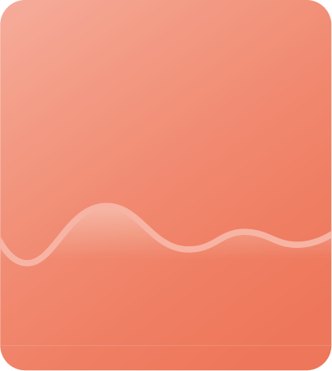

<ion-header>
  <ion-toolbar>
    <ion-title
      style="
        background-image: linear-gradient(
          119deg,
          rgba(92, 99, 91, 1) 0%,
          rgba(36, 114, 56, 1) 35%,
          rgb(122, 113, 172) 100%
        );
      "
      >showImage</ion-title
    >
  </ion-toolbar>
</ion-header>

<ion-content fullscreen>
  <ion-item class="close-fake ion-text-center" lines="none">
    <ion-button (click)="close()" fill="clear" color="light">
      <ion-icon slot="start" name="close"></ion-icon>
      Back
    </ion-button>
    <ion-button (click)="zoom(true)" fill="clear" color="light">
      <ion-icon slot="start" name="add"></ion-icon>
      In
    </ion-button>
    <ion-button (click)="zoom(false)" fill="clear" color="light">
      <ion-icon slot="start" name="remove"></ion-icon>
      out
    </ion-button>
  </ion-item>

  <ion-slides [options]="sliderOpts" #slider>
    <ion-slide>
      <div class="swiper-zoom-container">
        
      </div>
    </ion-slide>
  </ion-slides>
</ion-content>
